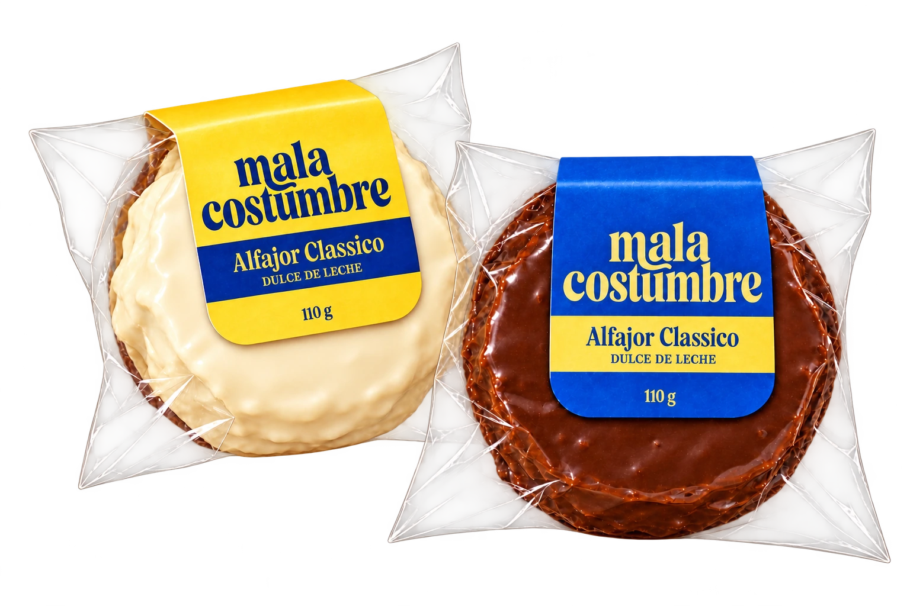

¿Cuál es tu debilidad?
Alfajores artesanales · Montevideo
BLANCO
MANÍ
Deslizá para ver los sabores
Un mordisco y me vas a querer para siempre.

Hechos en Montevideo · Así los hacemos
La costumbre
empieza por adentro.
Tapas de cacao. Dulce de leche. Y ese baño de chocolate que lo termina todo.
Alfajores artesanales para una pausa, un paseo o algo rico para compartir.
